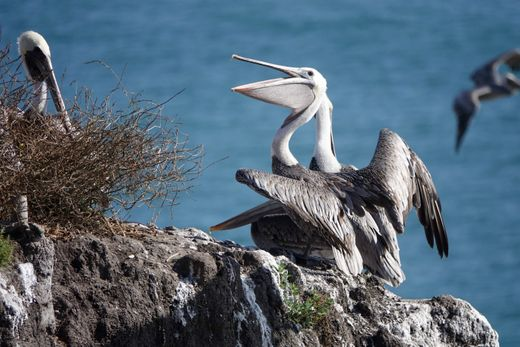

The classic California town of Pismo Beach

PISMO BEACH, Calif. — For 72 years, folks here have celebrated the town once known as the "Clam Capitol of the World" with a parade, visiting dignitaries and a big Clam Festival.
So what if clams dried up here in the 1990s, when fishing enthusi asts caught so many that local restaurants specializing in clam chowder had to resort to importing ingredi ents from Oregon and Washington State?
Hat hasn't stopped little Pismo from continuing the tradition with a big two-day October festival devoted to clams.
"It's a historical celebration, and people look forward to it all year," says Gordon Jackson, the executive director of the Pismo Beach Conference and Visitors Bureau.
Pismo has a lot going for it beyond the history of clams.
A jewel of central California, about halfway between Los Angeles and San Francisco and just down the road from San Luis Obispo and Hearst Castle, Pismo has some of the widest, un-developed beaches on the coast.